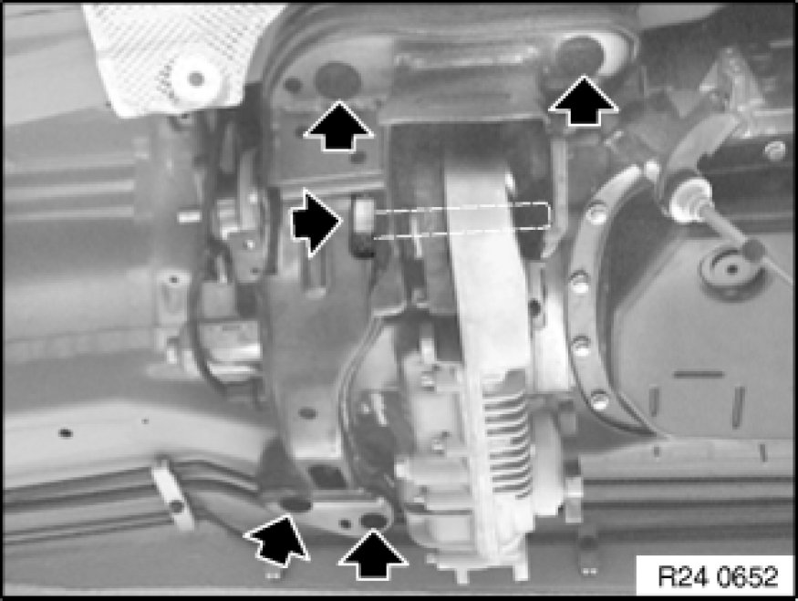
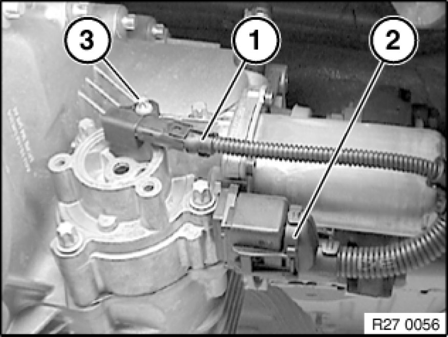

Replacing Resistor for Servomotor (ATC 400 X-Drive)
27 10 710 - Replacing resistor for servomotor (ATC 400 X-Drive)

Important!
Delete previous resistance values when replacing the resistor.
Using BMW diagnosis system, work through test program in accordance with instructions.

Release screws and remove transmission cross-member.
Tightening torque, 27 00 10AZ [1][2]Mechanical Specifications.

Detach plug (1) from resistor.
Release screw (3) and remove resistor.
Tightening torque, 27 00 14AZ [1][2]Mechanical Specifications.